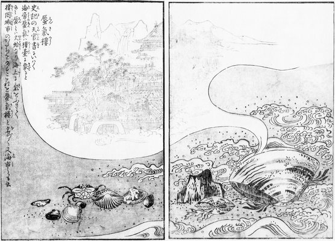

Nagirin's dubious website 〜 凪鈴の怪しいウェブサイト
I go by too many names, 凪鈴, Daniella Anastasia, Anastasia, 凪咲 and Daniella. These are by rough order of familiarity. I respond to all, but they all have a different vibe. Maybe I'm too arrogant to expect people to remember and use such a wide spectrum of names to refer to me, but that's how it is. I generally don't make a fuss about it, but I may ask you to use a different name if the current you use feels too distant or familiar.
The purpose of this site is to serve as a spot for various things. Blogging about ??? something, showing off things I like, talking about the Japanese language, tracking what books I've read (in Japanese) and reviewing them are the current things planned. But it may end up changing radically.
Primary languge here will be English, some Japanese writing if I feel confident and perhaps the rare Norwegian. Since English is not my first language, do expect questionable language at times.
I am aware that this site is going to be abysmal on phone, and I may make a dedicated phone layout at some point, but I got so excited with fulfilling my vision that I decided to throw reason out the window. I also know that if I let my perfectionism take hold at this stage, it'd be a disaster with regards to pulling through with this. So for now I apologise for a mobile unfriendly site.
If you ever want to give feedback or suggestions, or generally just chat, reach out on my fedi or add me on discord.

Truth is merely the hammer we use to drive down the nails of our reality, and if the hammer is poorly made, you merely hammer harder.